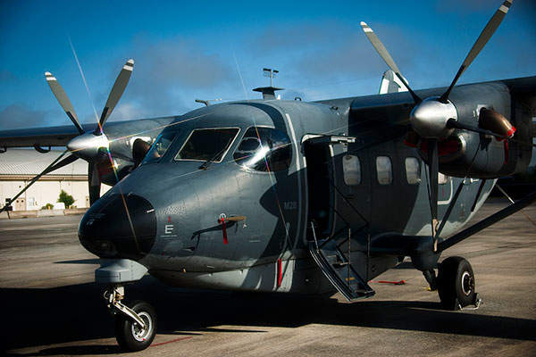
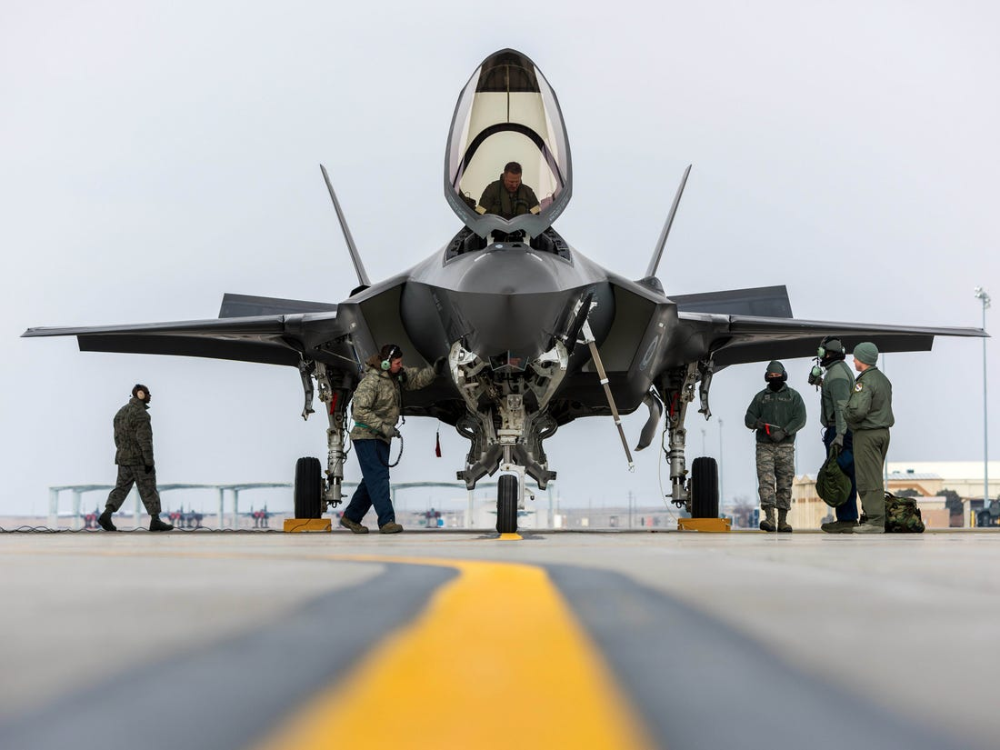
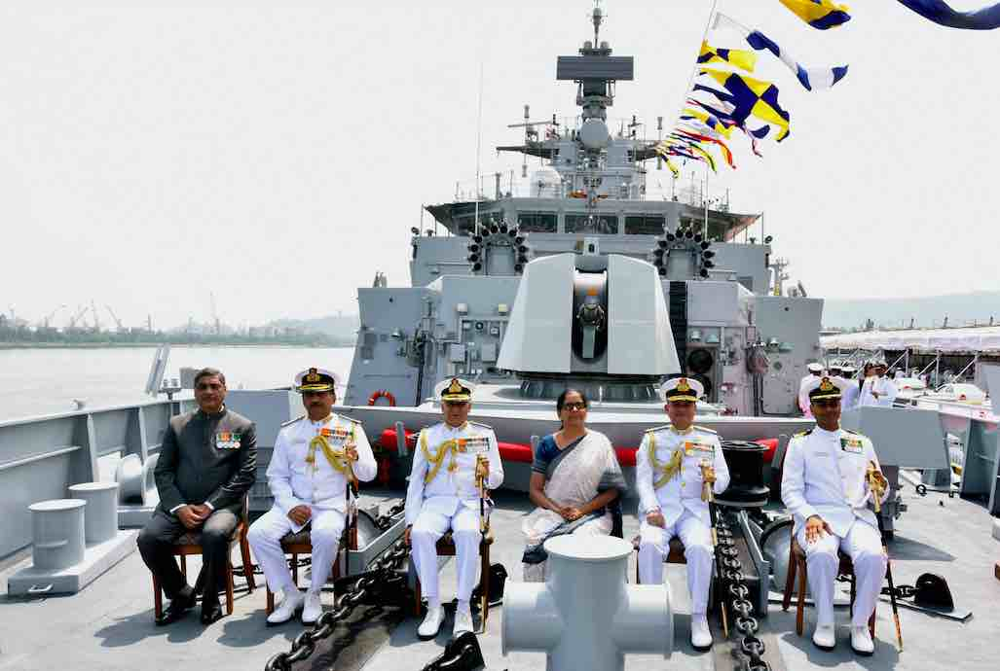
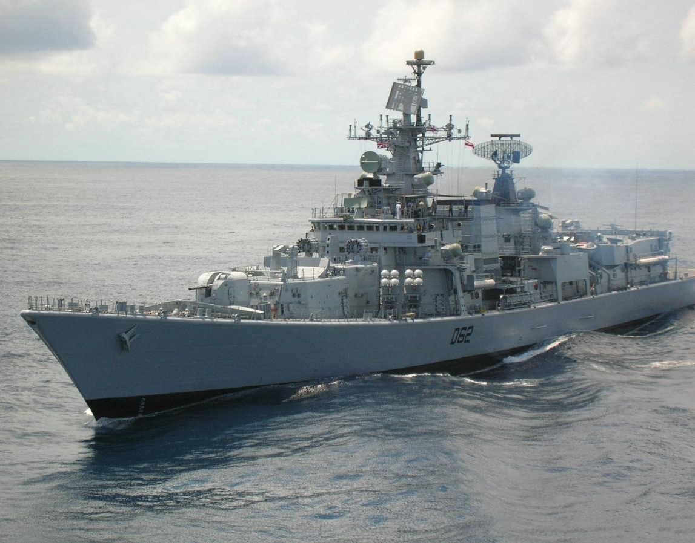
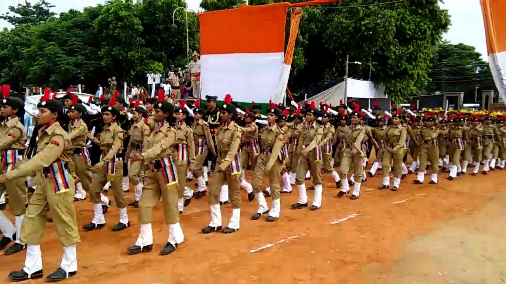

Indian Defence System
Indian Defence Report(2016)
India’s strategic location and its growing global interactions require engagement on a range of issues that impact on national.
security with a view to securing vital national interests.NEW DELHI: India has signed 182 contracts over the last three years and the current year with domestic and foreign vendors for the procurement of defence equipment for the three armed services.
In a written reply in Lok Sabha, Minister of State for Defence Rao Inderjit Singh said while 62 contracts were signed for the navy, 79 and 41 contracts were signed for the army and IAF respectively.
The defence equipment included ships, missiles, rockets, simulators, tanks, guns, aircraft, helicopters and radars.
Explaining the process, he said that the capital procurement proposals flow from the planning process.
Replying to another question, Singh said 169 of procurement proposals have been approved during the last three financial years and the current financial year with total Acceptance of Necessity (AoN) cost of Rs 2,49,755 crore.
About Weapon
Requests for Proposals (RFPs) have been issued to private sector companies for cases falling in different categories, including procurement cases for simulators, field shelters and vehicles.
The arms industry, also known as the defense industry or the arms trade, is a global industry which manufactures and sells weapons and military technology. It consists of a commercial industry involved in the research and development, engineering, production, and servicing of military material, equipment, and facilities. Arms-producing companies, also referred to as arms dealers, defense contractors, or as the military industry, produce arms for the armed forces of states and for civilians. Departments of government also operate in the arms industry, buying and selling weapons, munitions and other military items. An arsenal is a place where arms and ammunition - whether privately or publicly owned - are made, maintained and repaired, stored, or issued, in any combination. Products of the arms industry include guns, artillery, ammunition, missiles, military aircraft, military vehicles, ships, electronic systems, night-vision devices, holographic weapon sights, laser rangefinders, laser sights, hand grenades, landmines and more. The arms industry also provides other logistical and operational support.
The Stockholm International Peace Research Institute (SIPRI) estimated military expenditures as of 2012 at roughly $1.8 trillion.This represented a relative decline from 1990, when military expenditures made up 4% of world GDP. Part of the money goes to the procurement of military hardware and services from the military industry. The combined arms-sales of the top 100 largest arms-producing companies and military services companies (excluding China) totalled $398.2 billion in 2017, according to SIPRI.[2] This was 2.5 per cent higher than sales in 2016 and marks the third consecutive year of growth in Top 100 arms sales. In 2004 over $30 billion were spent in the international arms-trade (a figure that excludes domestic sales of arms). According to the institute, the volume of international transfers of major weapons in 2014–18 was 7.8 per cent higher than in 2009–13 and 23 per cent higher than in 2004–2008. The five largest exporters in 2014–18 were the United States, Russia, France, Germany and China whilst the five biggest importers were Saudi Arabia, India, Egypt, Australia and Algeria.
Many industrialized countries have a domestic arms-industry to supply their own military forces. Some countries also have a substantial legal or illegal domestic trade in weapons for use by their own citizens, primarily for self-defense, hunting or sporting purposes. Illegal trade in small arms occurs in many countries and regions affected by political instability. The Small Arms Survey estimates that 875 million small arms circulate worldwide, produced by more than 1,000 companies from nearly 100 countries.
Governments award contracts to supply their country's military; such arms contracts can become of substantial political importance. The link between politics and the arms trade can result in the development of what U.S. President Dwight D. Eisenhower described in 1961 as a military-industrial complex, where the armed forces, commerce, and politics become closely linked, similarly to the European multilateral defense procurement. Various corporations, some publicly held, others private, bid for these contracts, which are often worth many billions of dollars. Sometimes, as with the contract for the international Joint Strike Fighter, a competitive tendering process takes place, with the decision made on the merits of the designs submitted by the companies involved. Other times, no bidding or competition takes place.
India’s security environment encompasses a complex matrix of regional and global issues and challenges. India’s strategic location and its growing global interactions require engagement on a range of issues that impact on national security with a view to securing vital national interests.The need to enhance preparedness to address consequences of instability and volatility in parts of the immediate and extended neighbourhood remains a key priority. At the
same time, there are renewed and successful efforts to build stronger defence partnerships
with a wide range of friendly foreign countries to enhance international peace and stability.
The security situation in India’s immediate South Asian neighbourhood presents a mixed picture. While there was an improvement in the security and political situation in some countries, political developments caused a worsening of the internal security situation in others. Terrorism, insurgency and sectarian conflict increasingly threaten the stability of the region. Amidst ongoing efforts to impart fresh dynamism to strengthening relations with neighbours in a comprehensive manner, cooperative security approaches are of immediate relevance to the region. India is committed to build security co-operation with all partners in
the neighbourhood on the basis of equality, mutual benefit and mutual respect.
The Indian Ocean Region (IOR) iscentral to India’s growth and security. By virtue of its geo physical configuration as well as its strategic and economic imperatives, India looks to the seas and Oceans surrounding it. India’s peninsular projection into the Indian Ocean Region, astride the vital sea-lanes of the world stretching from the Suez Canal and the Persian Gulf to the Malacca Straits, also links India’s ability to engage freely in maritime trade and commerce.
India is also impacted by developments beyond its immediate neighbourhood and the Indian Ocean region. Developments in West Asia, Central Asia and the Asia Pacific have a direct bearing on India’s interests. In all these regions, we are witnessing major political and
economic shifts with strategic implications. While many of these transitions are marked
by growing volatility and violence, at the same time, inter-linkages of globalisation and deepening economic interdependence are also increasingly evident.
Internal Security Situation
Consequent re-calibrations and dynamics in the global balance of power, that are also driven by the rise of emerging economies and multipolarity, have created further uncertainties in the strategic outlook. These factors are increasingly being manifested in competition and contestation between states. The challenges to internal security in India can be categorized into four broad threats viz. cross border terrorism in Jammu & Kashmir, militancy in the North East, Left Wing Extremism (LWE) in certain states and terrorism in the hinterland. The Government has been making systematic and unrelenting efforts to counter these threats and, as a result, the internal security situation in the country is firmly under control. There is steep decline in terror attacks in the hinterland and the violence perpetrated by LWE.
However,
developments in Jammu & Kashmir and Punjab have been a cause of concern, especially the cross-border terror attacks and trafficking of arms & narcotics. The overall security situation in J&K remains stable in spite of the focused efforts of separatists and terrorist tanzeems to disrupt the prevailing peace. This was primarily due to the protracted operations of the Security Forces in the hinterland and effectiveness of the counter infiltration grid on the Line of Control/International Border. However radicalization and fresh recruitment in South Kashmir is a cause of concern. Left Wing Extremism (LWE) continues to be an area of concern to the internal security of the country. However, LWE violence has been declining over the years due to various efforts of the Government such as greater presence of security forces across the LWE affected States, loss of cadres/ leaders on account of arrests, surrender and desertions, better monitoring of development schemes and insurgency fatigue among Maoist cadres.





Copyright : Defence System of India